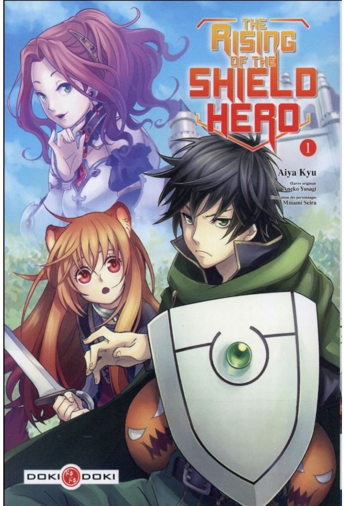

The Rising Shield Hero - tome 1
- Éditeur VF : Doki-Doki (Doki-Doki - Seinen)
- Éditeur VO : Media Factory
- Date de parution VO : 23/06/2014
- Date de parution VF : 01/06/2016
- Prix : 7.50 € / 595 ¥
- Nombre de pages : 192
- Illustrations : N&B
- Code ISBN : 9782818936238
- Scénariste : Aneko Yusagi
- Dessinateur : Aiya Kyu
- Chara-designer : Minami Seira
- Type : Seinen
- Genres : Action - Aventure - Drame – Fantasy
- Résumé :
Naofumi est projeté dans un monde proche en tout lieu d'un jeu de rôle d'heroic fantasy. Mais alors que d'autres héros ont été dotés d'armes offensives redoutables, Naofumi hérite d'un bouclier aux capacités limitées pour progresser dans ce jeu où le danger peut surgir à chaque instant. Trahi par sa partenaire et vilipendé par la population, le jeune homme ne peut désormais compter que sur lui-même pour survivre dans cet univers hostile… et peut-être sur une jeune fille désœuvrée aux ressources insoupçonnées.